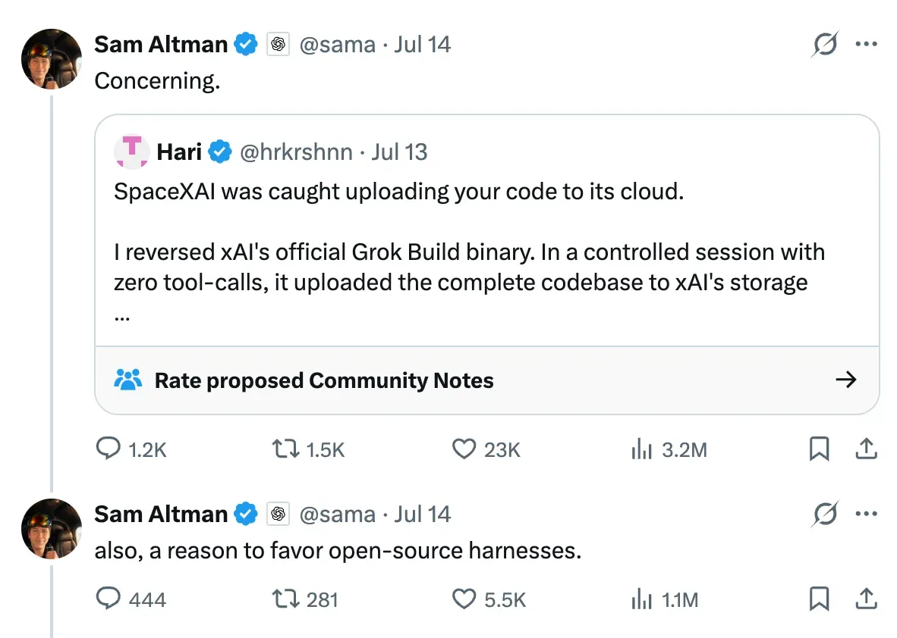
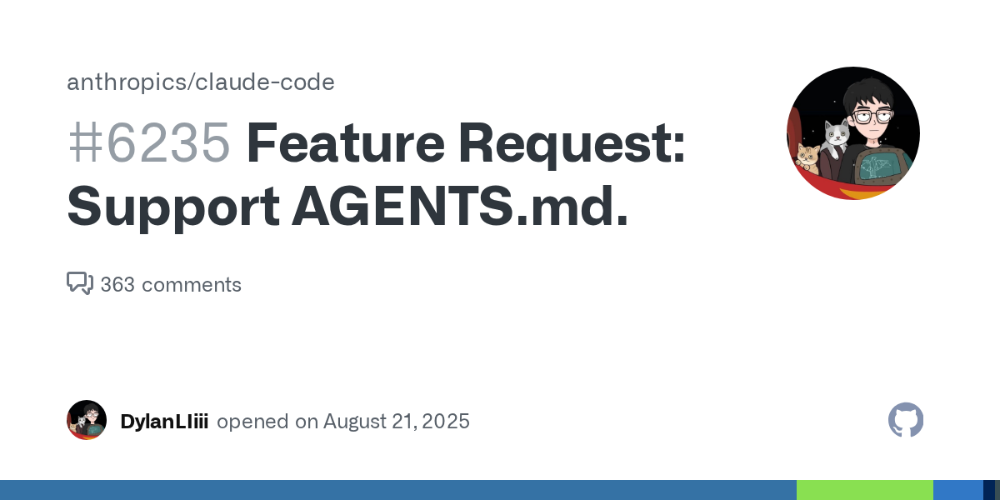
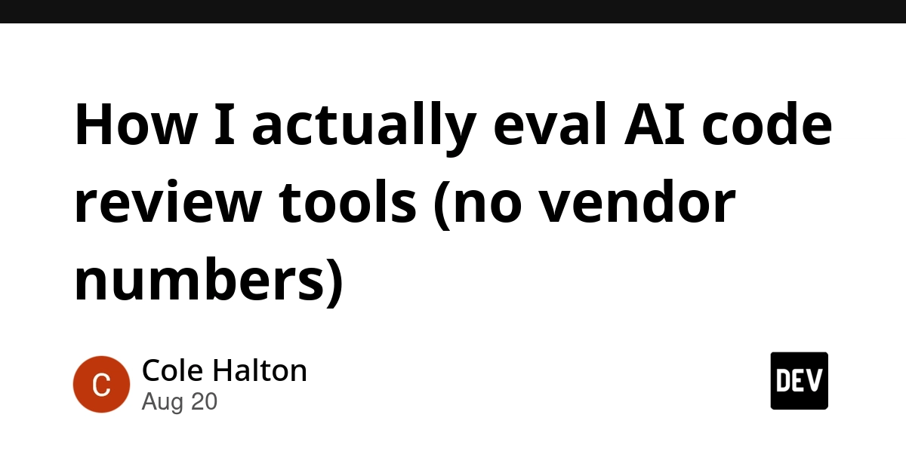
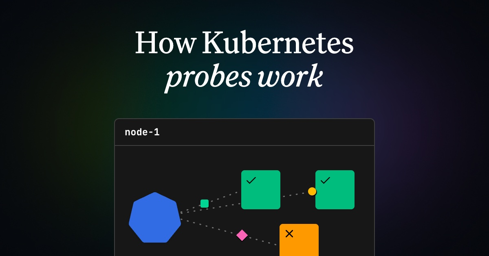
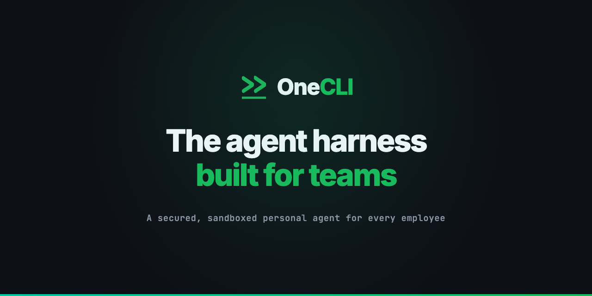
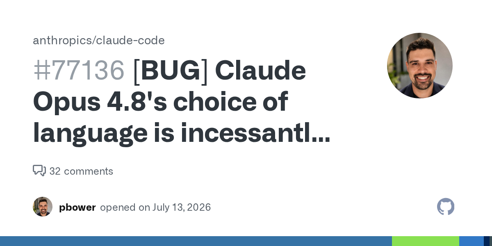
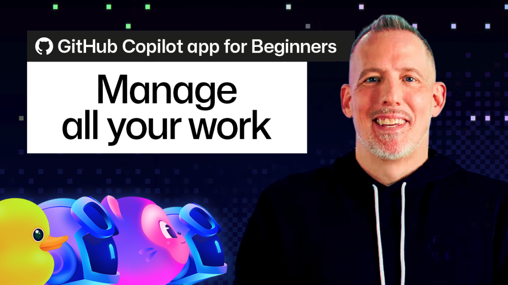
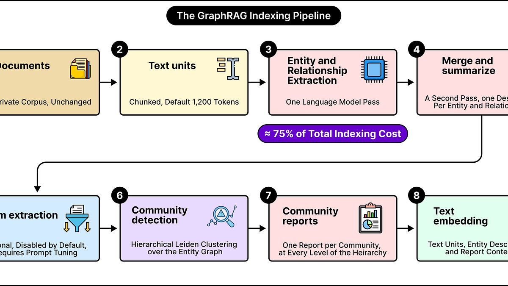
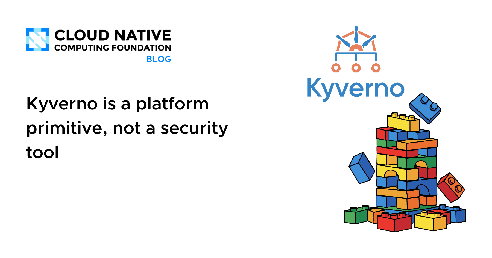

🔥 Top 3 (must read)
The Pulse: Grok's CLI caught uploading all your local files to the cloud
Devs found that Grok CLI pushed all local files, including
.env files and git history, to a GCP bucket without encryption. SpaceX's first reaction was to blame the devs. Why it matters: your team runs AI coding CLIs with full file access every day — this is the case study for why you need a policy on which agent tools are allowed and what they can read.
Feature Request: Support AGENTS.md in Claude Code
(HN discussion, 145 points) — A push for Claude Code to support AGENTS.md, the emerging cross-tool standard for agent instructions, instead of only CLAUDE.md. The thread covers how teams keep instructions in sync across Copilot, Cursor, and Claude Code. Why it matters: if your team uses more than one coding agent, one shared instruction file beats maintaining three copies.

How I actually eval AI code review tools (no vendor numbers)
A DIY method for testing AI code review tools on your own repos before letting them into CI, instead of trusting vendor precision numbers. The author's first real-repo run gave 30 comments and 25 were pedantic or wrong. Why it matters: as an EM you decide which AI review tool "earns a seat in CI" — this gives you a repeatable way to make that call.

🛠 Tools & releases
smolmachines / smolvm as a sandbox for untrusted Python & JavaScript
Simon Willison's research on using smolvm to run untrusted code fast and safely. Useful if you ever let agents or users run code.
S
How Kubernetes Probes Work
(HN) — Clear walkthrough of liveness, readiness, and startup probes and how they actually behave.

🤖 AI for developers
Launch HN: OneCLI (YC S26) — OSS sandboxed agent harness for teams
Open-source harness for running coding agents in sandboxes at team level. Directly on the "how teams adopt agents safely" theme.

Opus 5.0 drives incoherence into the stratosphere
(HN) — A widely upvoted Claude Code issue about model output quality. Worth a skim if your team is on Opus 5.

GitHub Copilot app: Managing your work
The "My work" pane tracks several Copilot sessions at once: in flight, done, next.

Conceptual integrity and counting lines of code
Simon Willison on how AI changes software development, from a Talking Postgres podcast.
S
Extensible software in the age of LLMs (Jeremy Morrell, via Simon Willison)
Idea: build a solid core app and let LLMs write safe, sandboxed user extensions.
S
GraphRAG: How AI answers questions hidden across many documents
ByteByteGo explainer on graph-based RAG for questions that span many documents.

👔 Engineering & teams
The CSS Problem Nobody Thinks Is Solvable
A real migration story: moving a large frontend from Material UI to Radix + Tailwind while four CSS systems had to coexist.
Kyverno is a platform primitive, not a security tool
Argues Kyverno should live with the platform team, not on the security team's budget line. An org-design question as much as a tech one.

🎯 For me
AI code review eval method
The is the most actionable item today — it maps straight to your "how teams adopt AI" decisions.
AGENTS.md discussion
The matters if your team mixes Claude Code and Copilot.
N
MUI → Radix/Tailwind migration
The is the one item squarely in your React/TypeScript lane.
Nothing today on Playwright, Maestro, Flutter, or Node.js releases.
💡 App ideas & indie builds
Frugal Tokens — explore costs and usage across coding agents
(HN) — A dashboard for what your coding agents actually cost. Problem: teams adopt agents with no view of spend. Very close to a tool you could build for your own team.
D
S.T.F.U — an app that detects a kid yelling while gaming
Calibrates to one voice, escalates consequences, logs everything. Problem: a house rule that needed automatic, fair enforcement. Fun example of turning a parenting pain into sensors + rules.
R
A project management tool that fills a jar with your finished tasks
Problem: todo apps show what's left, never what you did. A tiny visual reward loop — a pattern you could reuse in any habit or team tool.
R
A tool to fix forgetting everything you read a week later
Problem: reading without retention. Spaced resurfacing of things you read is a simple, evergreen app idea.
R
Offline read-aloud and dictation utility for Mac
Problem: TTS and dictation tools that need wifi and send your text away. "Same tool, but local and private" is a repeatable indie angle.
R
🎓 Try this
Run the DIY eval from How I actually eval AI code review tools on one of your own repos: take 10 recent real PRs, let a tool review them, and count useful vs. noisy comments before you decide anything about CI.